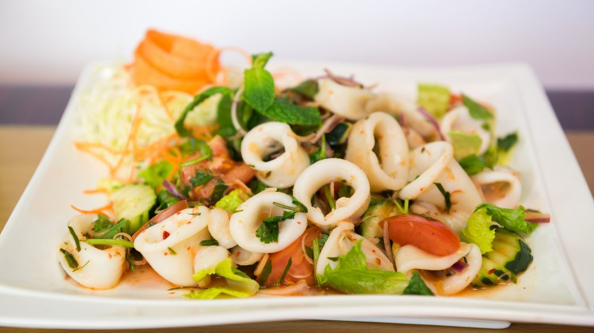

Calamari Salad

Ingredient
- 1 clove crushed garlic
- 1 pinch salt
- 1 cup white wine
- ½ cup water
- 2 pounds squid
- 2 tablespoons minced shallots
- 2 cloves crushed garlic
- ½ cup extra virgin olive oil
- 2 teaspoons lemon zest
- ½ cup fresh lemon juice
- salt and pepper to taste
Preparation steps
- Prepare squid by pulling off the tentacles and head. Reach into the body and pull out the hard quill and discard. Peel the colored skin off from the body. Rinse under cold water and cut the body into rings. Cut the tentacles from the head and discard the head.
- Place the onion, garlic, wine and water in a medium saute pan. Bring to liquid to a boil. Add the prepared squid. Turn heat down to low. Cover and simmer for 1 hour.
- While squid is cooking prepare the dressing. In small bowl stir together the shallot, 2 garlic cloves, olive oil, lemon zest, lemon juice and salt an pepper to taste.
- Drain the cooked squid and let cool slightly. In a medium bowl toss the squid with the dressing cover and let marinate for at least 15 minutes and serve.